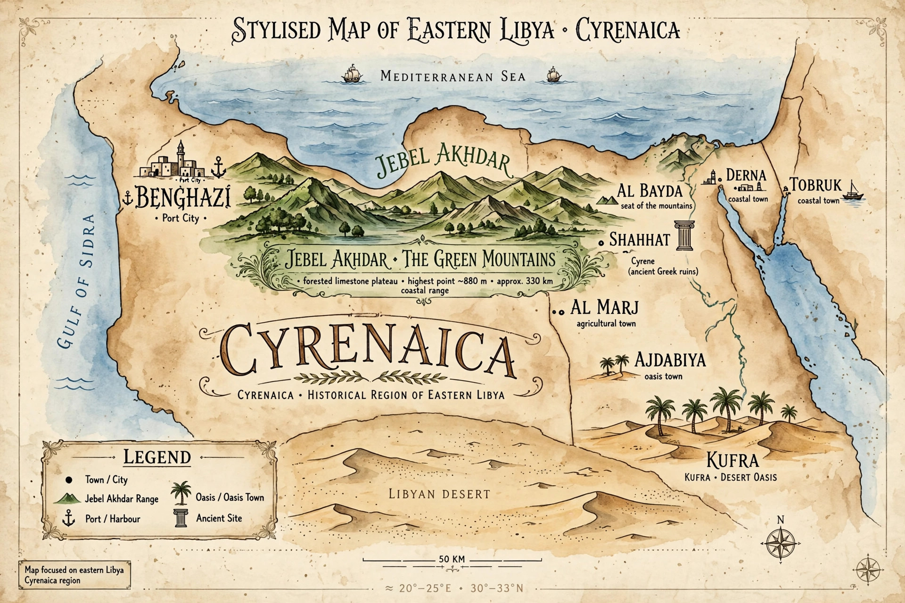

From Wikipedia, the free encyclopedia
| Cyrenaica | |
|---|---|
 | |
| Region | Eastern Libya |
| Principal city | Benghazi |
| Greek founding | c. 630 BC (Cyrene) |
Cyrenaica is the eastern coastal region of Libya, stretching from the Gulf of Sidra to the Egyptian border. Along with Tripolitania in the west and Fezzan in the south, it is one of the three traditional provinces of the country. Its chief city is Benghazi; the region takes its name from the ancient Greek city of Cyrene.
The region was colonised by Greek settlers from Thera around 630 BC, who founded Cyrene; four other cities followed — Barce (al-Marj), Euesperides (later Berenice, modern Benghazi), Taucheira (Tocra) and Apollonia — forming the Pentapolis, "five cities." Cyrenaica prospered on the export of the medicinal plant silphium, depicted on its coins, until overharvesting drove the plant to extinction. The region also gave rise to the Cyrenaic school of philosophy, founded by Aristippus of Cyrene, a follower of Socrates who taught that pleasure is the chief good.
Cyrenaica passed under Ptolemaic rule after Alexander the Great's conquests, then to Rome, becoming the province of Creta et Cyrenaica in 74 BC. In late antiquity it was a Christian region. The Arab conquest of the 7th century AD brought Islam and the Arabic language. The Ottomans ruled from the 16th century; Italy colonised Libya in 1911, and Cyrenaica became the centre of resistance under the Senussi leader Omar Mukhtar. Under the Italian and later the independent Libyan kingdom (1951), Cyrenaica was a distinct province, the monarchy's heartland; it has remained a focus of regional identity, including during the 2011 Libyan civil war, when Benghazi was the rebels' capital.
The region is dominated by the Jebel Akhdar ("Green Mountain"), a fertile plateau where rainfall supports agriculture — olives, wheat, fruit — unusual in Libya's arid expanse. Cyrenaica holds much of Libya's oil wealth in the Sirte Basin. Tobruk, at the eastern end, was the scene of the famous siege of 1941 during the Second World War.